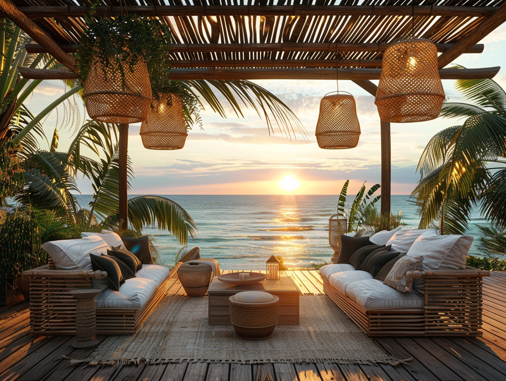
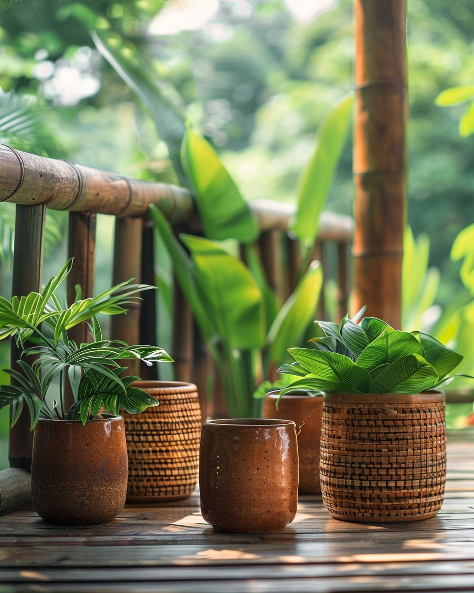

Mobilier de jardin pour la Guadeloupe
Salons, tables, transats, parasols : du mobilier sélectionné pour résister au climat tropical.
Mobilier jardin Guadeloupe : le prolongement du salon
En Guadeloupe, la terrasse n'est pas un lieu d'été : c'est un prolongement permanent du salon. Du café du matin au déjeuner du dimanche, votre salon de jardin Guadeloupe sert tous les jours.
Notre sélection de tables extérieures Guadeloupe et de transats met l'accent sur la durabilité : assises confortables, structures qui ne rouillent pas, tissus qui sèchent vite.

Salon de jardin Guadeloupe & table extérieure
Quatre familles complémentaires pour aménager une terrasse complète : salons, tables extérieures, transats, parasols.
Salons de jardin
- Rotin synthétique
- Aluminium thermolaqué
- Bois exotique (teck, eucalyptus)
- Coussinages déperlants
- Housses de protection
Tables & chaises
- Tables extensibles
- Tables d'appoint
- Chaises empilables
- Chaises lounge
Transats & relaxation
- Transats à roulettes
- Bains de soleil
- Hamacs
- Coussins
Parasols & ombrages
- Parasols droits
- Parasols déportés
- Voiles d'ombrage
- Stores et tonnelles

UV, humidité, embruns : les trois ennemis
Sous nos latitudes, un mobilier de jardin subit en six mois ce qu'un mobilier européen encaisse en cinq ans.
Privilégiez l'aluminium thermolaqué, le rotin synthétique de qualité, les bois exotiques imputrescibles (teck, eucalyptus FSC). Et stockez systématiquement les coussins à l'abri.
Optez pour des coussins déperlants ou avec housses lavables. Le mildiou s'installe vite sur des tissus humides en zones boisées.
Table extérieure Guadeloupe : quel matériau choisir ?
Aluminium, teck, rotin synthétique, eucalyptus : chaque matériau a ses forces. Notre guide rapide pour bien arbitrer.
Aluminium thermolaqué
Le meilleur compromis pour un salon de jardin Guadeloupe qui dure : ne rouille pas, résiste aux UV, supporte les embruns. Léger, facile à déplacer, peu d'entretien.
Bois exotiques (teck, eucalyptus FSC)
L'authenticité tropicale. Imputrescibles, ils prennent une belle patine grise au fil des saisons. Un entretien annuel à l'huile spéciale teck conserve la couleur d'origine si vous préférez.
Rotin synthétique
L'esthétique du rotin sans ses inconvénients sous les tropiques. 100 % résistant à l'humidité et aux UV, idéal pour les tables extérieures Guadeloupe et les fauteuils lounge.
Pour une terrasse exposée plein sud ou en bord de mer, oubliez tout ce qui contient du fer non traité (rouille en 6 mois) et les plastiques bas de gamme (fissurent sous les UV). Investir dans la qualité, c'est s'épargner un remplacement tous les 2 ans.
Les autres rayons Plein Air
Aménagez votre extérieur avec nous
Apportez vos dimensions et quelques photos : nos conseillers vous orientent vers le mobilier qui correspond à votre terrasse et à vos usages.
Trouver un magasin